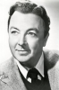

Country:United States, 75 minutes
Spoken languages:English
Genres:Comedy, Mystery, Thriller
Director(s):Frank McDonald
Writer(s):Winston Miller, Maxwell Shane
Video Codec:Unknown
Number: 109


Certification:NR
Storyline:
An insurance salesman, Albert Tuttle, is hired as a body guard for a millionaire.
Cast: 


Medium: Original DVD,
Comments: Part of: 100 Greatest Horror Classics
Loaned: No
Aspect ratio: Unknown